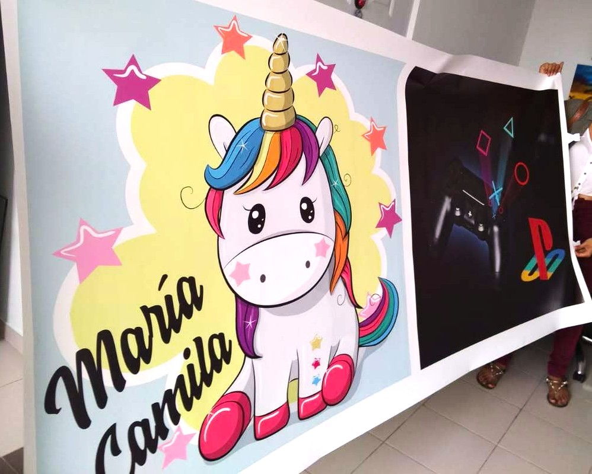
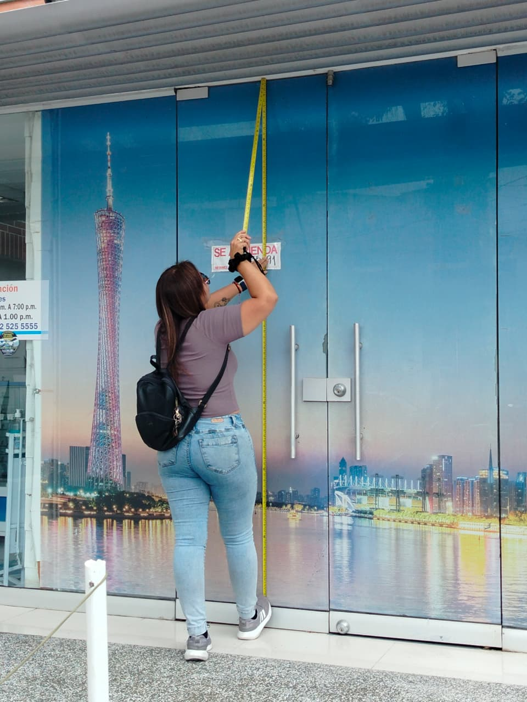
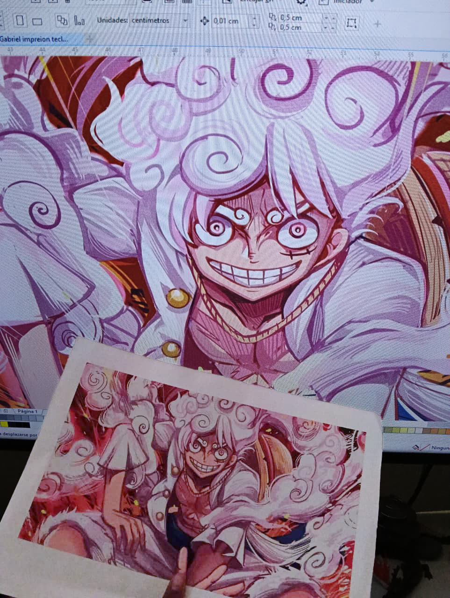

Errores comunes al imprimir un vinilo (y cómo evitarlos) ⚠️

.jpeg)
.jpeg)
Imprimir un vinilo decorativo parece algo sencillo… hasta que algo sale mal 😅. Un color distinto, una medida incorrecta o un material equivocado pueden arruinar el resultado final.
Para que tu vinilo quede perfecto, aquí te contamos los errores más comunes y cómo evitarlos antes de mandar a imprimir.
❌ Error 1: No definir bien el tipo de vinilo
Uno de los errores más frecuentes es confundir el material. No todos los vinilos sirven para lo mismo.
Existen vinilos de recorte, impresos, esmerilados, microperforados, opacos, transparentes y más. Cada uno tiene una función distinta según dónde lo vayas a instalar.
👉 Pregunta todo: ¿es para vidrio o pared?, ¿interior o exterior?, ¿con luz directa?, ¿temporal o permanente?
📏 Medidas exactas
Si tú tomas las medidas, añade siempre 1 cm de más. Es mejor que sobre a que falte.
🎨 Colores reales
El color en el celular o computador nunca es igual al impreso. Siempre pide una prueba de color.
🧾 Detalles claros
Indica si el vinilo va con fondo, recorte, blanco, transparente o laminado.
Un error pequeño en diseño o medidas puede convertirse en un gran problema. La clave está en preguntar y confirmar todo.
📏 Error 2: Tomar mal las medidas
Medir sin verificar dos veces es un error clásico. Una pared puede no estar totalmente recta o el espacio puede tener marcos, enchufes o molduras.
- ✔️ Mide ancho y alto en varios puntos
- ✔️ Añade siempre 1 cm extra
- ✔️ Ten en cuenta obstáculos

🎨 Error 3: Confiar solo en la pantalla
Las pantallas emiten luz, pero la impresión refleja luz. Por eso el color puede cambiar.
Un verde vibrante en el celular puede verse más oscuro o más opaco al imprimir.
👉 Siempre pide una prueba de color antes de producir en grande.

💡 Tips para que tu vinilo quede perfecto
- ✔️ Envía tu diseño en alta resolución
- ✔️ Pregunta por el acabado (mate, brillante, laminado)
- ✔️ Confirma el tipo de superficie
- ✔️ Solicita una muestra si es posible
- ✔️ Guarda un margen extra en el diseño
.jpg)
Imprimir un vinilo no es solo enviar un archivo. Es un proceso donde cada detalle cuenta. Preguntar, medir bien y validar colores puede ahorrarte tiempo, dinero y frustraciones 😊.